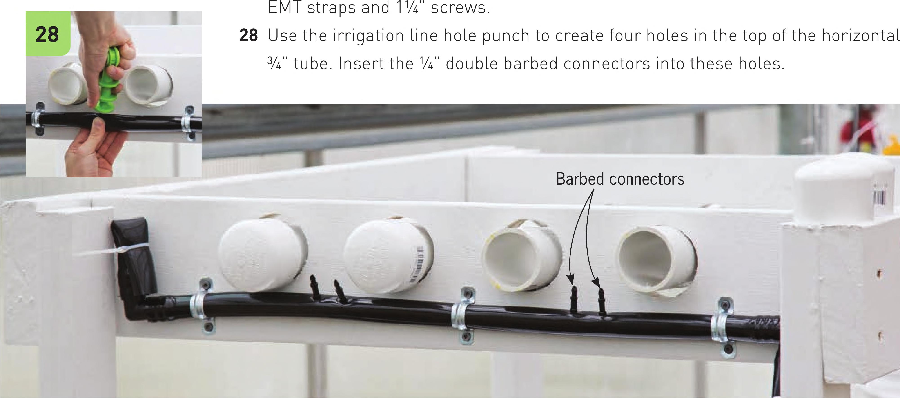
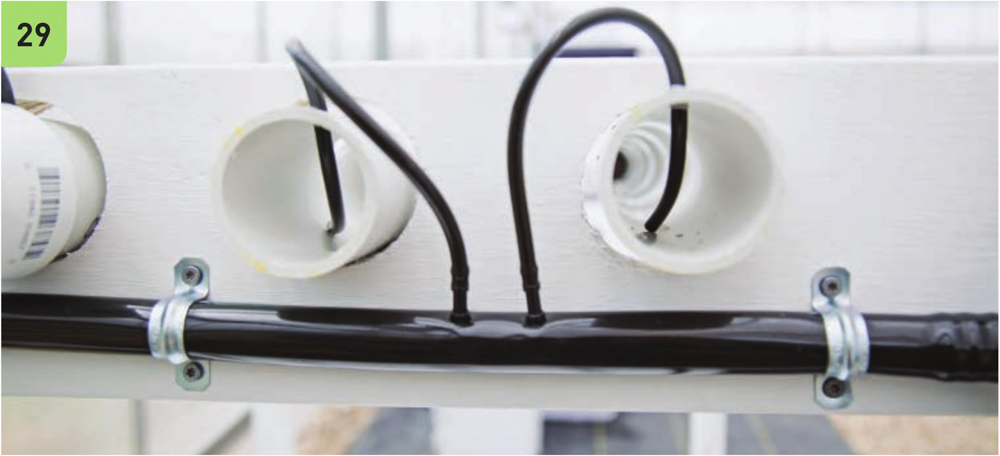

Assemble the Irrigation System 27 The main water delivery line to the channels is a 3A" vinyl tube attached to a submersible pump in the reservoir. The 3A" delivery line can be run up to the channels along one of the support legs. Use an elbow to direct the tube across the crossbeam. End the line going across the crossbeam with a 3A" elbow. This elbow attaches to a short 4" segment of 3A" tube that is held tightly folded in half with a zip tie. This zip tie can be removed to clean out the irrigation line during system cleanouts. The elbow at the end allows the gardener to direct the water away from the system during a cleanout. Fasten the 3A" water delivery line in place with 3A" 29 With scissors, cut four 8" segments of W black vinyl tubing. Attach one end of the tubes to the VC double barbed connectors and insert the other end into the PVC channel. The tube should be positioned in the channel so the flow is directed down the channel. HYDROPONIC GROWING SYSTEMS 79

